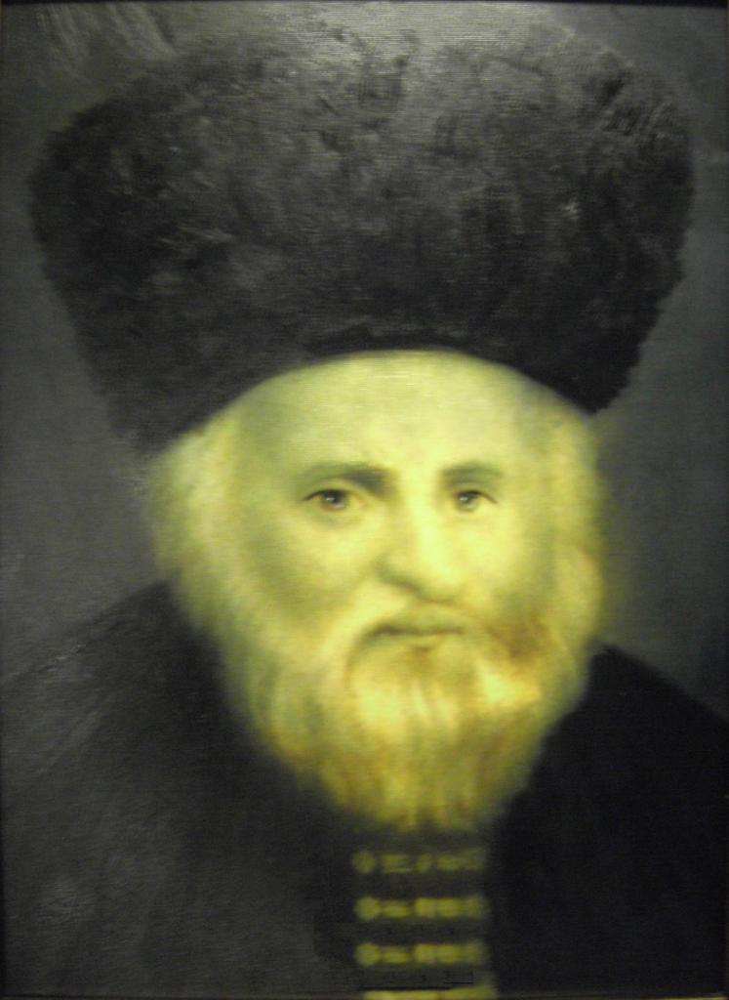

בחרו תאריך עברי; המחשבון בוחר את הפרק על פי היום בשבוע והטבלה.

בחול המועד פסח וסוכות נבחרת השורה לפי היום בחג והיום בשבוע; ביום חול רגיל לפי משנה תמיד ז׳:ד׳. בראש חודש מוצג פרק ק״ד. בשבת מוצג רק ״שבת שלום!״; ביום טוב מוצגת ברכה וגם מספר הפרק לשואלים מראש. בחרו בין לוח ארץ ישראל ללוח חוץ לארץ, שבו היום השני של יום טוב אינו מציג פרק.
ברירת המחדל היא היום לפי לוח השנה בישראל. אחרי השקיעה היום העברי כבר השתנה; במקרה כזה בחרו ידנית את התאריך של היום הבא. ימי חול רגילים חושבו לפי משנה תמיד ז׳:ד׳, שאינה חלק מהטבלה. בחוץ לארץ ימי חול המועד נשארים לפי מספר היום המקורי בחג, לאחר דילוג על יום טוב שני.
הטבלה המקורית: שיר של יום לפי מנהג הגר״א (PDF) · מקור התמונה · שיר של יום בשאר ימי השבוע: משנה תמיד ז׳:ד׳